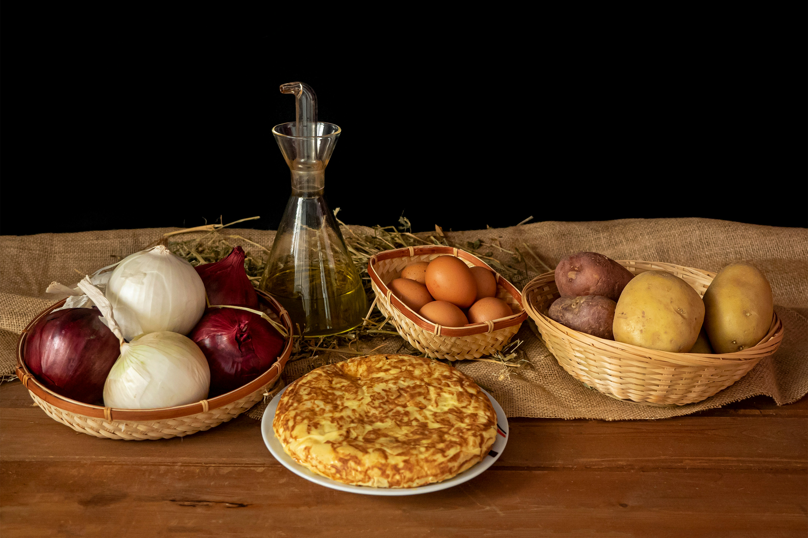

Spanish Tortilla

Description
As you may well guess, I have cooked thousands of tortillas in my life.
There are about 25 different ways to cook tortilla and I have cooked them
all: onion first, onion after, caramelised or not, no onion, potato
slow-cooked or fried... the mind boggles. But after all my research, I
believe this is the best recipe.
Ingredients
- 2 large potatoes, peeled and halved
- 1 onion, peeled and halved
- 8 eggs
- salt
- 400 ml olive oil
Steps
-
Thinly slice the potato halves, cut side down, so that you end up with
half-circle shaped slices. Do the same with the onion.
-
Pour the olive oil into a deep frying pan and add the thinly sliced
onion. Place over a high heat so you are cooking the onion from cold.
Once the onion starts to sizzle (this should take about 5 minutes), add
the sliced potatoes. Cook for about 15 minutes, stirring from time to
time, until they are soft and cooked throughout. The potatoes and onions
should have browned in some corners because of the contact with the
bottom of the pan. If this hasn’t happened drain away some of the oil
and caramelize them a bit in the pan. Remove the potatoes and onions
from the pan and set aside.
-
Break the eggs into a large bowl but don’t whisk them; check there are
no pieces of shell. Add the hot potatoes and onions to the eggs and
season with salt while the potatoes are sitting on the top. Carefully
mix through; use a fork to break up the eggs but don’t over-mix –
justcan, leave the mixture to rest for half an hour to allow the
flavours to develop.
-
To make the tortilla place a non-stick pan over a medium heat and add a
drizzle of olive oil. When the pan is hot add the egg mixture. If you
don’t have a non-stick pan add the mixture to a very hot pan but reduce
the heat to its lowest setting straight away; this will stop the
tortilla sticking to the pan. Do not stir the contents of the pan!
-
Depending on the depth of your pan and the amount of heat from your
stove, the cooking time will vary so you will need to use your
judgement. After about 3 minutes you should be able to ease the tortilla
from the edge of the pan using a fork or spatula. At this point, cover
the pan with a plate (which should obviously be wider than the pan).
Hold firmly with both hands and flip the pan over on to the plate. Slide
the tortilla back into the pan for the other side to cook. Place back on
the heat for another 2 minutes (I like it when the middle is still soft
and a little runny).
NOTE: If this is the first time you have made a tortilla you might want to
practise the flipping action with a plate and an empty pan first!